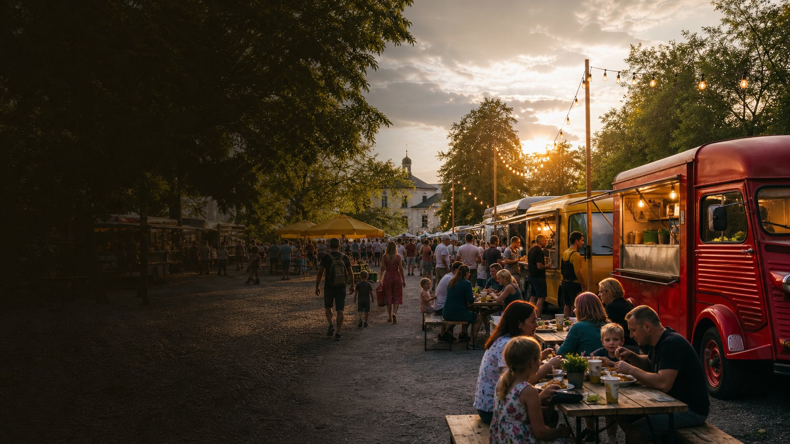
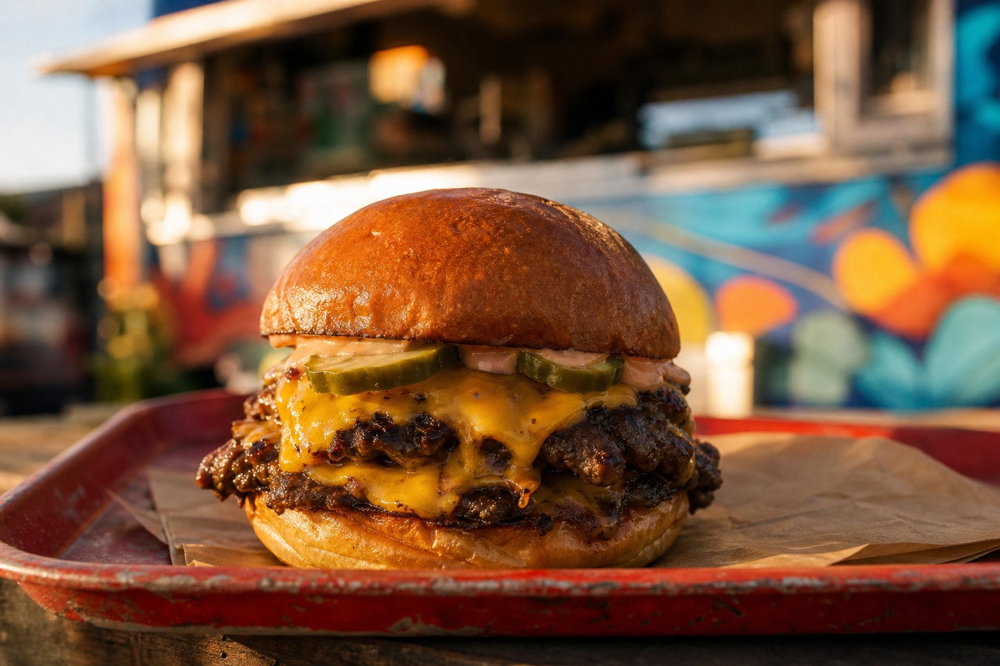
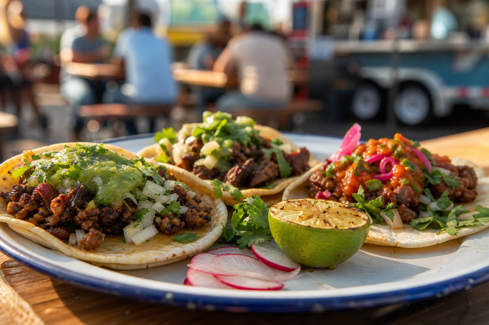
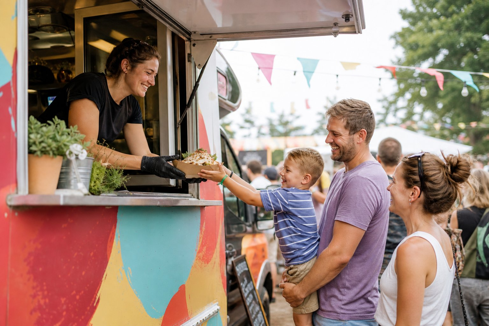

CZER13–15PIĄTEK — NIEDZIELA
NAJBLIŻSZE WYDARZENIE
↗
Biała Podlaska
Plac Wolności, Biała Podlaska
Pt. 14:00–21:00 / Sob. 12:00–21:00 / Nd. 12:00–20:00

Smak. Ludzie. Dobra energia.
Najlepsze food trucki, kuchnie z czterech stron świata i festiwalowa atmosfera — bliżej, niż myślisz.
Festiwale z apetytem
Tworzymy wydarzenia, które łączą ludzi przy dobrym jedzeniu.
Festiwale, na które Was zapraszamy, to wycieczka w najbardziej odległe zakątki świata street foodu. Selekcjonujemy wyjątkowe food trucki i przywozimy je do miast wschodniej Polski.
Obserwuj nas na Facebooku ↗Spotkajmy się
Terminy kolejnych festiwali publikujemy na bieżąco. Wpadnij, spróbuj i zostań na dłużej.
Plac Wolności, Biała Podlaska
Pt. 14:00–21:00 / Sob. 12:00–21:00 / Nd. 12:00–20:00
Będzie pysznie
Od klasyków po kulinarne podróże. Każdy truck ma swoją specjalność i własną historię.



Zróbmy coś dobrego
Organizujesz miejskie wydarzenie? Szukasz sprawdzonego partnera i najlepszych food trucków? Porozmawiajmy.